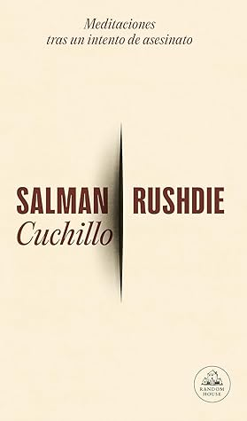

Cuchillo
Reseña por Jorge I. Zuluaga

Ver reseña en GoodReads (necesita cuenta)
Mi primera impresión del controvertido autor "angloindioamericano" es que es un narrador con una habilidad natural para tejer historias que atrapan, que te enredan y no te sueltan hasta que ya no puedes dejar el texto sin ver el final.
Puede que esta sea solo una primera impresión, pero estoy muy seguro de que sus obras de ficción deben tener esa característica en común con este texto, entre autobiográfico y crónica periodística, en el que, entre otras cosas, narra la historia del horroroso atentado a cuchillo que sufrió en 2022, a mansalva, cuando ya se sentía seguro después de sobrevivir por más de 30 años a la condena impuesta por la teocracia iraní, la fetua, que obligaba a cualquier fiel musulmán a acabar con su vida.
Los detalles que presenta Rushdie en esta crónica (así la llamaré en lo sucesivo) son entre horripilantes y muy personales.
Unas semanas antes de leer este libro había leído una crónica similar, guardadas (¿o no?) las proporciones, escrita por el autor colombiano Héctor Abad Faciolince sobre el atentado en el que casi muere y en el que perecieron una docena de personas, entre ellas una poeta ucraniana, perpetrado por las fuerzas de ocupación rusa en el Dombás ucraniano. Los paralelismos entre ambas historias y las formas de narrarlas me parecieron increíblemente similares, guardadas, repito, las debidas proporciones: en la crónica de Rushdie, el autor salió con heridas terribles que dejaron huellas en su cuerpo y por las cuales sufrió un largo proceso de recuperación, mientras que en la de Héctor Abad, que no fue sin embargo menos grave, el autor colombiano salió intacto. Imagino que Héctor Abad leyó a Rushdie; obvio, creo que no se inspiró en él, pero me parece como si se hubieran puesto de acuerdo.
La entrevista imaginaria que hace Rushdie al joven que perpetró el atentado, y que seguro, a la fecha de escribir esta reseña, sigue esperando los juicios por intento de homicidio y terrorismo, es una verdadera maravilla. Las preguntas que formula el autor y las respuestas entre lacónicas, rabiosas y sectarias del joven imaginado hacen de este pasaje de esta crónica una de las mejores cosas que he leído en este género.
Me asombró mucho la manera en la que un autor, del que siempre pensé que era un tipo rudo, que no tenía pelos en la lengua para decir algo, valiente y viajado, se abre para mostrarnos los aspectos más personales de su vida, sus debilidades más pueriles, el temor al dolor y a los procedimientos médicos, su desesperación por dormir en su casa después de meses de pasar entre hospitales y un loft en el que se refugia de los paparazzis, incluso sus limitaciones económicas (no es un multimillonario como muchos imaginamos a los autores y autoras de renombre).
Muchas frases, muchas citas de otros autores y otras autoras, incluso de la Biblia, me dejó la lectura de esta crónica. También algunas reflexiones profundas sobre la vida, sobre el amor, sobre la muerte, sobre la religión, sobre la libertad de expresión y sobre la familia. En fin, vale la pena leerla.